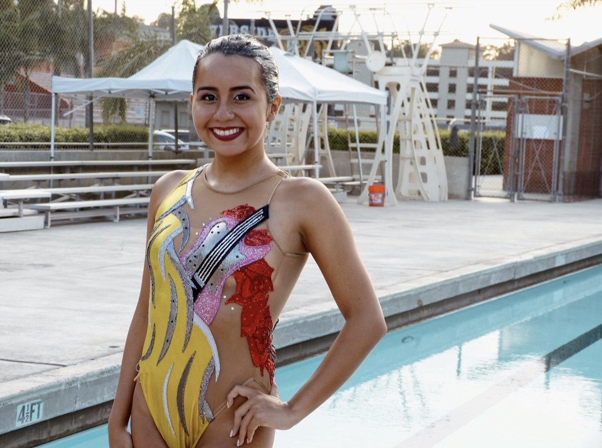
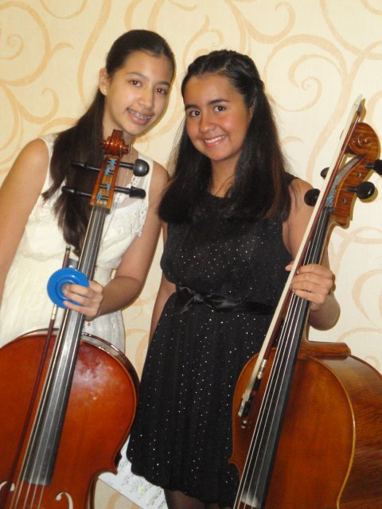

Hobbies
This is a little about my hobbies!
Synchronized Swimming
Being a part of a nationally ranked synchronized swimming team has been one of the most impactful occurrences of my life. I was a part of the Coral Springs Aquacades for nearly eight years, and have gained countless skills and made connections that will last a lifetime. In the earlier years of my involvement with the sport, I faced some difficulties trying out something new. However, with years of arduous training and devotion, my team and I placed second for multiple years in the national competition, Junior Olympics. All those years of training with my teammates allowed me to further refine my ability to work as a team, and be able to have a smooth collaboration with the people I work with. I was always told that with hard work comes success, and my experience with synchronized swimming has been a clear example of that. My team did face a few obstacles, but we were able to overcome them and improve, which is a quality that I try to mirror and apply to my everyday life.
Cello
Nam sapien ante, varius in pulvinar vitae, rhoncus id massa. Donec varius ex in mauris ornare, eget euismod urna egestas. Etiam lacinia tempor ipsum, sodales porttitor justo. Aliquam dolor quam, semper in tortor eu, volutpat efficitur quam. Fusce nec fermentum nisl. Aenean erat diam, tempus aliquet erat.
Etiam iaculis nulla ipsum, et pharetra libero rhoncus ut. Phasellus rutrum cursus velit, eget condimentum nunc blandit vel. In at pulvinar lectus. Morbi diam ante, vulputate et imperdiet eget, fermentum non dolor. Ut eleifend sagittis tincidunt. Sed viverra commodo mi, ac rhoncus justo. Duis neque ligula, elementum ut enim vel, posuere finibus justo. Vivamus facilisis maximus nibh quis pulvinar. Quisque hendrerit in ipsum id tellus facilisis fermentum. Proin mauris dui, at vestibulum sit amet, auctor bibendum neque.